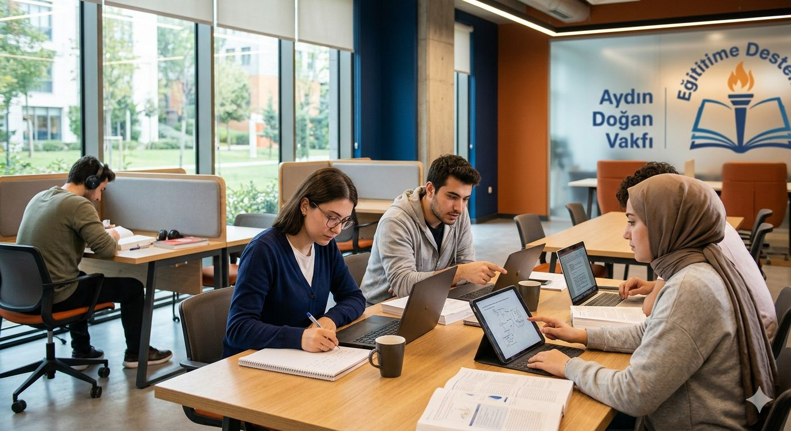

Dünyamıza karşı sorumluluğumuzun bilincindeyiz. Karbon ayak izimizi azaltıyor, toplumsal değer üretiyor ve şeffaf bir yönetim anlayışıyla geleceği inşa ediyoruz.
İklim kriziyle mücadelede Galata Wind gibi iştiraklerimizle yenilenebilir enerjiye yatırım yapıyor, kaynak verimliliğini artırıyoruz.
Aydın Doğan Vakfı ile eğitime, fırsat eşitliğine ve toplumsal kalkınmaya odaklanarak daha adil bir dünya için çalışıyoruz.
Etik değerler, şeffaflık ve hesap verebilirlik ilkelerimizle, tüm paydaşlarımıza güven veren bir kurumsal yönetim sergiliyoruz.

Sürdürülebilirliğin sadece çevreden ibaret olmadığına inanıyoruz. Eğitimde fırsat eşitliğini sağlamak ve kız çocuklarının okullaşmasını desteklemek, Doğan Holding'in toplumsal sürdürülebilirlik vizyonunun temelini oluşturur. Yıllardır binlerce gence burs ve eğitim imkanı sunarak geleceği şekillendiriyoruz.
Şeffaflık ilkemiz gereği tüm çevresel ve sosyal performans verilerimizi raporumuzda şeffaflıkla paylaşıyoruz.
Raporu PDF Olarak İndir